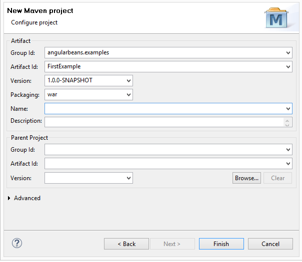

STEP1: Project Environment
This angularBeans example is built with following tools and technologies:- AngularJS 1.4.5
- SockJS 0.3.4
- Bower (optionnal as you can use a CDN link to your js dependencies)
- Maven 3
- Eclipse Luna
- JDK 1.7
- wildfly 9.0 (or any javaEE7 web/full profile AS)
- Jboss tools eclipse plugin (if wildfly used).
Bower:
for this step,I recommand this excellent bower beginning tutorial by Matt West: http://blog.teamtreehouse.com/getting-started-bowerThe new Maven project:
In eclipse: new->project->maven project.select create simple project (skip archetype selection)
fill the next form as follows: 
Maven dependencies
First of all you need to add angularBeans dependency and the JavaEE7 api depencies in your pom.xml.
<properties>
<maven.compiler.source>1.7</maven.compiler.source>
<maven.compiler.target>1.7</maven.compiler.target>
</properties>
<dependencies>
<dependency>
<groupId>javax</groupId>
<artifactId>javaee-web-api</artifactId>
<version>7.0</version>
<scope>provided</scope>
</dependency>
<dependency>
<groupId>com.github.bessemHmidi</groupId>
<artifactId>angularBeans</artifactId>
<version>1.0.2-RC2</version>
</dependency>
</dependencies>
beans.xml:
Under src/main/resources add a META-INF directory (right-click->new folder) containing a beans.xml file:
<beans xmlns="http://xmlns.jcp.org/xml/ns/javaee"
xmlns:xsi="http://www.w3.org/2001/XMLSchema-instance"
xsi:schemaLocation="http://xmlns.jcp.org/xml/ns/javaee
http://xmlns.jcp.org/xml/ns/javaee/beans_1_1.xsd"
bean-discovery-mode="all">
</beans>
You need now to synchronize eclipse metadata's (facet) with your new pom.xml, press Alt-F5 (or right click->maven->update project) then "OK".
Bower JS dependencies:
Now we will use bower to add AngularJS execute the following bower command ( under the web-app folder) :
{{workspace absolute path}}\FirstExample\src\main\webapp> bower install -g angularjs
under the eclipse project select the webapp folder then click F5 (to refresh the view)
you will see a new folder "bower_components"
congrat ! you are now ready for the next step:
<STEP2: my first angular bean>
Support or Contact
Having trouble with Pages? Check out the documentation at https://help.github.com/pages or contact support@github.com and we’ll help you sort it out.